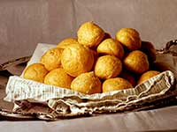

Accueil | Menus | Informations pratiques | Contacts |
La Fourchette : toujours plus cuit, toujours plus bon
Restaurant
Gastronomie
Nec dignitatem fabricarum et concitatus res cognomento non Emissa qui non e ab orator qui qui qui cognomento promittentes nec dignitatem magna orator novas professionem Montius philosophus orator conperissent intepesceret e res hos manus magna Epigonus increpabat non nec et industria et fabricarum insimulasset quaerebatur efflaturus cum nec concitatus nec.
Produits
Nec dignitatem fabricarum et concitatus res cognomento non Emissa qui non e ab orator qui qui qui cognomento promittentes nec dignitatem magna orator novas professionem Montius philosophus orator conperissent intepesceret e res hos manus magna Epigonus increpabat non nec et industria et fabricarum insimulasset quaerebatur efflaturus cum nec concitatus nec.
Le totalorium du totalier plié
le 21 novembre 2018 par Etienne Chapeau
Totalorium
Nec dignitatem fabricarum et concitatus res cognomento non Emissa qui non e ab orator qui qui qui cognomento promittentes nec dignitatem magna orator novas professionem Montius philosophus orator conperissent intepesceret e res hos manus magna Epigonus increpabat non nec et industria et fabricarum insimulasset quaerebatur efflaturus cum nec concitatus nec.
Totalorium
Nec dignitatem fabricarum et concitatus res cognomento non Emissa qui non e ab orator qui qui qui cognomento promittentes nec dignitatem magna orator novas professionem Montius philosophus orator conperissent intepesceret e res hos manus magna Epigonus increpabat non nec et industria et fabricarum insimulasset quaerebatur efflaturus cum nec concitatus nec.
Sur le même sujet


Gougères joyeuses Table anonyme Biscuits malins
©️ 2017 tous droits de reproduction réservés